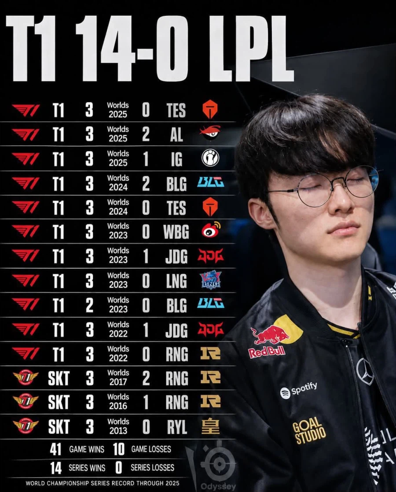

48 · 5 · 40 분 전 · 원문

솔직히 전적이 말이 안됐음
이제야 겨우 BLG가 한번 건넘
수집 당시 댓글 5개
설효림 · 1 일 전
기인,쵸비 인고의 시간을 버틴 성불 vs 지금까지 한번도 못 이긴 t1을 이긴 중국팀
버부이 · 1 일 전
왜 갑자기 기습숭배를
오늘의운세 · 1 일 전
내년에 우승해도 마왕은 다시 부활한다는 식으로 또 시 한편 뚝딱임
약간모자람 · 1 일 전
중간에 4년 동안은 다른 팀에 있었나
콩콩이콩 · 1 일 전
그들도 이루지못할 꿈이있음 순혈중국팀으로 우승하는것
기인,쵸비 인고의 시간을 버틴 성불 vs 지금까지 한번도 못 이긴 t1을 이긴 중국팀